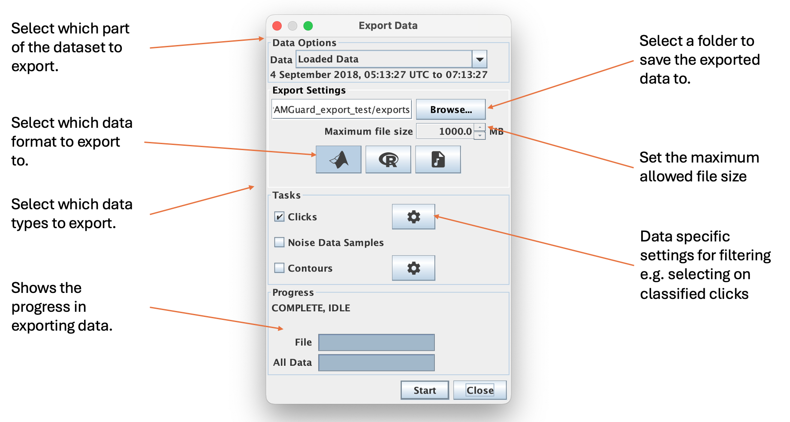
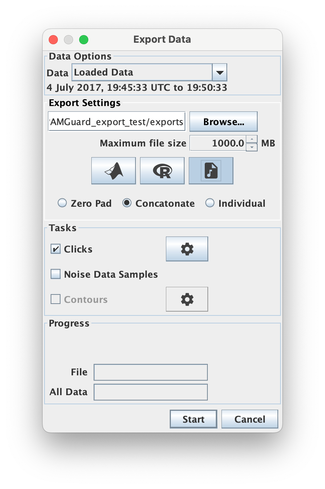

The PAMGuard exporter allows users to export PAMGuard data, such as detections, to a variety of different formats. The exporter is a convenient solution for exporting sections or large chunks of a PAMGuard datasets without requiring any code. For more bespoke data management please see the PAMGuard-MATLAB library and PAMBinaries package which can be used for more bespoke data management. Note that the exporter only exports a sub set of data types - this will expand in future releases.
The PAMGuard exporter can be accessed from File->Export. This brings up the Export dialog. The export dialog allows users to select which data to export, where to export it and the file format to export as. Each data block also has a settings icon which opens the data block's unique data selector. So for example, users can export only specific types of clicks or whistles between certain frequencies.

The main parts of the dialog are as follows.
Select which part of the dataset to export
Select where to export the data to using Browse... and select the maximum allowed file size using the Maximum file size selector. Select the format by toggling one of the data format buttons. Hover over each button to see more info.
Select which data to export. If a data type has a cog icon next to it then it has a data selector. The data selector settings can be used to filter which detections are exported. For example you may wish only to export clicks of a certain type or perhaps deep learning detections with a prediction value above a certain threshold. Each data selector is unique to the type of data. Note that the exporter only exports a sub set of data types - this will expand in future.
Once Start is selected then the progress bars show progress in exporting the selected data.
Currently the exporter has three possible output formats.
MAT files are files which can be opened easily in MATLAB and Python. They can store multiple different data formats e.g. tables, arrays, structures. Each PAMGuard detection is saved as a single structure and then the file contains an array of these structures for each data type. The fields within the structure contains the relevant data unique to each data unit. Whilst data units have unique fields depending on their type e.g. a click or a whistle, there are some fields that are shared between almost all data units - an example of a click detection structure is shown below
General fields shared by most data units in PAMGuard
Unique to clicks
Note that the format of each struct is the same as the format if extracting data using the PAMGuard-MATLAB library.
To open an exported .mat file simply drag it into MATLAB or use the function;
load(/my/path/to/file.mat)
To open a .mat file in Python use
import scipy.io
mat = scipy.io.loadmat('/my/path/to/file.mat')
clkstruct = mat['det_20170704_204536_580'] #The name of the struct array within the file
#Extract the third waveform from a click example
nwaves = len(clkstruct[0]) #Number of clicks
thirdwaveform = clkstruct[0, 2]['wave'] #Waveform from third click in samples between -1 and 1.
Data can be exported to an RData frame. The data are exported as R structs with the same fields as in MATLAB (and PAMBinaries package). To open a an RData frame open RStudio and import the file or use;
load("/my/path/to/file.RData")
Any detection which contains raw sound data, for example a click, clip or deep learning detection, can be exported as a wav file. When wav files are selected three options are presented for saving files.

Zero pad : Here detections are saved as wav files with the time in between detections zero padded. The resulting files will be as large as the initial wav files processed to create the data. This can be useful if for example opening the files in another acoustic analysis program.
Concatenate : The detections are saved to a wav file without any zero padding. This saves storage space but temporal information is lost within the wav file. The sample positions of each detection are saved in a text file along with the wav file so that temporal info is available if needed. This is same format as SoundTrap click detection data.
Individual : Each detection is saved in it's own time stamped individual sound file.
Once data are exported, the exported files are not part of PAMGuard's data management system i.e. PAMGuard has no record they exist and they are not shown in the data model etc. If you export the same data again to the same location, then previous exported files may be overwritten without warning.